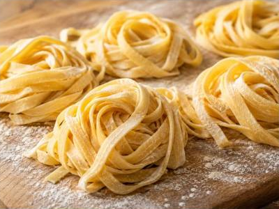
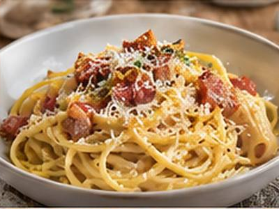
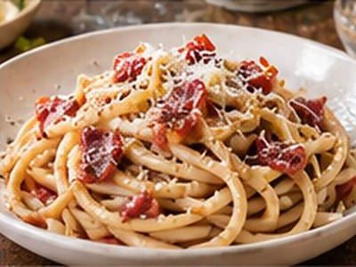
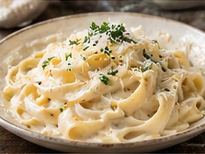
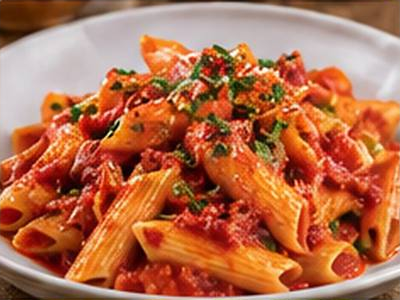
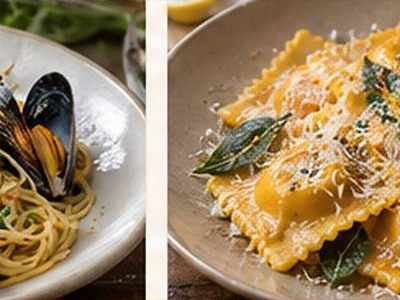
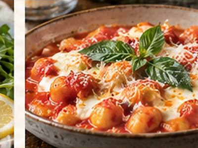
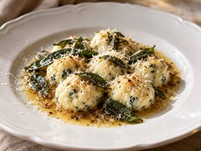

PASTA GUIDE
Which pasta goes with which sauce?
Pasta shape changes how a dish eats. Thin strands favor light, slick sauces; tubes trap chunky sauces; ridged shapes hold ragù; broad ribbons suit rich meat and cream sauces; and filled or dumpling-style pastas need sauces that support rather than overwhelm them.

From: Fresh Pasta with Hard + Soft Flour
From: Spaghetti CarbonaraLong strands
Long pasta pairs especially well with smooth sauces and emulsions that coat each strand.
| Picture | Pasta | Best sauces | Best additions | Why it works |
|---|---|---|---|---|
| From: Spaghetti Carbonara | Spaghetti | Tomato, carbonara, aglio e olio, seafood, lemon-butter | Clams, mussels, shrimp, guanciale, herbs, chile | Its round, moderate thickness carries emulsified sauces without overpowering delicate ingredients. |
 | Linguine | Seafood, pesto, lemon, light cream | Clams, shrimp, scallops, herbs | The slightly flattened strand gives seafood and silky sauces more surface area to cling to. |
 From: Perciatelli alla Gricia | Bucatini / Perciatelli | Amatriciana, gricia, robust tomato sauces | Guanciale, pancetta, Pecorino, chile | The hollow center and substantial bite stand up to salty, fatty Roman sauces. |
 From: Fettuccine Alfredo | Fettuccine / Tagliatelle | Alfredo, Bolognese, mushroom cream, slow ragù | Beef, pork, mushrooms, Parmigiano | Broad ribbons carry heavy sauces and distribute chunks of meat evenly. |
 From: Rigatoni Amatriciana
From: Rigatoni AmatricianaShort tubes and sturdy shapes
Ridges, tubes, and cups catch chunky sauces, vegetables, cheese, and bits of meat.
| Picture | Pasta | Best sauces | Best additions | Why it works |
|---|---|---|---|---|
| From: Rigatoni Amatriciana | Rigatoni | Meat ragù, Amatriciana, baked pasta, chunky tomato sauces | Sausage, pork, ricotta, Pecorino, eggplant | Wide openings catch chunks while ridges hold thick sauce. |
 From: Penne all’Arrabbiata | Penne | Arrabbiata, vodka sauce, pesto, vegetable sauces | Chile, tomato, chicken, zucchini, peas | Diagonal tubes scoop sauce and small additions into each bite. |
 | Paccheri | Seafood ragù, rich tomato, braised meat sauces | Shellfish, sausage, eggplant, ricotta | Oversized tubes are ideal for chunky, dramatic sauces. |
 | Orecchiette | Sausage and greens, pesto, vegetable sauces | Broccoli rabe, sausage, peas, beans | The cup shape catches small pieces and glossy sauce. |

From: Butternut Squash Ravioli with Brown Butter and SageFilled, baked, and dumpling-style pasta
These substantial forms often need simpler sauces that support rather than hide their filling or texture.
| Picture | Pasta | Best sauces | Best additions | Why it works |
|---|---|---|---|---|
| From: Butternut Squash Ravioli with Brown Butter and Sage | Ravioli | Brown butter, light cream, sage, simple tomato | Sage, nuts, Parmigiano, browned butter | The filling is already the star, so restrained sauces work best. |
 From: Gnocchi alla Sorrentina | Gnocchi | Gorgonzola cream, tomato-mozzarella, brown butter, pesto | Blue cheese, sage, mushrooms, tomato, fresh mozzarella | Soft potato dumplings are best with smooth sauces that coat gently. |
 From: Ricotta and Parmesan Gnudi | Gnudi | Brown butter, sage, simple tomato | Sage, Parmigiano, toasted nuts | Delicate ricotta dumplings need light sauces that do not mask their texture. |
| From: Fresh Pasta with Hard + Soft Flour | Lasagna / baked pasta | Ragù, béchamel, tomato, cheese sauces | Ricotta, mozzarella, sausage, eggplant | Layered pasta supports substantial sauces and cheese through long baking. |
Pasta water is an ingredient: Before draining pasta, reserve 1 to 2 cups of the hot, starchy cooking water. Add it to the sauce in small splashes while tossing vigorously. The dissolved starch helps emulsify butter, olive oil, cheese, cream, rendered pork fat, and tomato sauce so the sauce becomes glossy, cohesive, and better able to cling to the pasta. Use only as much as needed, and salt the cooking water a little more cautiously for salty sauces such as carbonara, gricia, cacio e pepe, or Amatriciana.
General rule: pair delicate pasta with delicate sauce and sturdy pasta with sturdy sauce. For chunky sauces, choose shapes with ridges, cups, or tubes. For smooth emulsified sauces, choose strands or broad ribbons.
KITCHEN TABLE INDEX
Recommended pasta for every pasta dish
| Recipe | Recommended pasta | Why |
|---|---|---|
| Spaghetti Carbonara | Spaghetti or rigatoni | Spaghetti gives the classic silky coating; rigatoni catches guanciale and egg-cheese emulsion. |
| Pasta Cacio e Pepe | Tonnarelli or spaghetti | Thick strands provide friction and surface area for the Pecorino-pepper emulsion. |
| Rigatoni Amatriciana | Rigatoni | The tubes capture tomato and guanciale while the ridges hold sauce. |
| Perciatelli alla Gricia | Perciatelli / bucatini | The hollow strand suits rendered guanciale, Pecorino, and pepper. |
| Fettuccine Alfredo | Fettuccine | Wide ribbons carry the butter-cheese emulsion evenly. |
| Pasta e Ceci | Ditalini or small tubetti | Small tubes match the chickpeas and spoonable, stew-like consistency. |
| Rigatoni with Pecorino and Crispy Guanciale | Rigatoni | Large tubes catch crisp guanciale and creamy Pecorino sauce. |
| Rigatoni with Pork Ragù and Fresh Ricotta | Rigatoni | A sturdy ridged tube is ideal for chunky pork ragù and ricotta. |
| Penne all’Arrabbiata | Penne rigate | Ridges and angled openings capture spicy tomato sauce. |
| Bucatini Amatriciana | Bucatini | The substantial hollow strand stands up to guanciale-rich tomato sauce. |
| Spaghetti with Shrimp, Lemon, Mint, and Pecorino | Spaghetti or linguine | Long strands suit shrimp and a light lemon-cheese emulsion. |
| Pasta alla Norma | Rigatoni or penne | Short tubes catch cubes of eggplant, tomato sauce, and ricotta salata. |
| Gnocchi alla Sorrentina | Potato gnocchi | Soft gnocchi are ideal for tomato, mozzarella, and basil. |
| Spaghetti with Mussels | Spaghetti or linguine | Long strands integrate easily with mussel broth and olive oil. |
| Butternut Squash Ravioli with Brown Butter and Sage | Large ravioli | Brown butter and sage enhance the filling without overwhelming it. |
| Bolognese Meat Sauce | Tagliatelle | Broad egg ribbons are the traditional match for dense meat ragù. |
| Ricotta and Parmesan Gnudi | Gnudi | Serve the delicate ricotta dumplings with brown butter, sage, or restrained tomato sauce. |
| Pasta ’Ncasciata | Maccheroni, rigatoni, or ziti | Sturdy tubes hold up to baked layers of sauce, eggplant, meat, and cheese. |
| Pasta Aglio e Olio | Spaghetti | Thin long strands distribute garlic oil, chile, and parsley evenly. |
| Miso Mushroom and Leek Pasta | Tagliatelle or fettuccine | Broad ribbons hold creamy miso-mushroom sauce and sliced vegetables. |
| Fresh Pasta with Hard + Soft Flour | Tagliatelle, fettuccine, ravioli, or lasagna sheets | The dough is versatile enough for ribbons, filled pasta, or sheets. |
| Gnocchi Gorgonzola | Potato gnocchi | The soft dumplings balance a rich, smooth blue-cheese cream sauce. |
| Lemon Pasta | Spaghetti or linguine | Long strands emulsify beautifully with lemon, butter, Parmesan, and pasta water. |